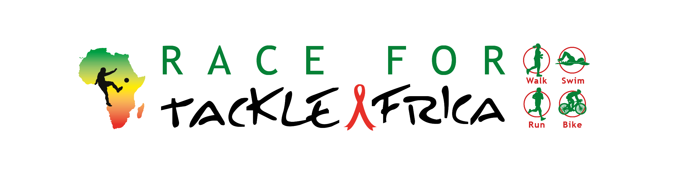

Following our successful campaign 2 years ago, we once again invite you to travel virtually through 24 countries, including all 17 we have worked in during our 20 years history.
The route will begin in St Louis, Senegal, and takes us across West Africa; notably, through Guinea, Mali, Côte d’Ivoire, and Ghana.
Next, after visiting Cameroon, we will travel across to East Africa, passing through Uganda, Kenya, Burundi, and Tanzania.
We will finish in Durban, South Africa, having completed 15,000km to raise money for our HIV and Sexual and Reproductive Health programmes for young people.